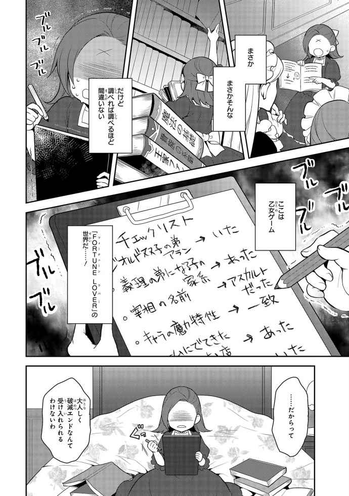

| 乙女ゲームの破滅フラグしかない悪役令嬢に転生してしまった... ノベル＆コミック試読版 | |
| 山口 悟 & ひだか なみ | |




目次
第三章 初めてのお茶会と新しい友達
第四章 挑まれた勝負とその結末
第五章 麗しの美形兄妹との出会い
第六章 ついに迎えた誕生日
君に捧げる贈り物
あとがき
イラストレーション ◆ ひだかなみ
乙女ゲームの破滅フラグしかない悪役令嬢に転生してしまった...１
第一章 前世の記憶を思い出す
調子にのって明け方近くまでゲームをしてしまい......案 の定 、朝寝坊した。
制服に着替えて、顔だけ水でさっと流すと、髪 もとかすことなくボサボサの頭で玄関へ向かう。
「仮にも女子高生がそんな恰 好 で恥 ずかしい」と母の小言が聞こえたが、さらっと聞き流す。
玄関を出ると中学から愛用する自転車に飛び乗り、ペダルを全力で回す。
自宅から大通りに続く下り坂では調子づいてさらにペダルを回す。
さらにさらにペダルを回す。さらにさらに回す。回す回す回す......回しすぎて自転車が止まらなかった。
自転車は交通量過多の大通りにそのまま突っ込んだ。
......ブラックアウトしていく意識の中......「このアホがー」という家族の声がこだましていた。
......という前世の記憶を......先ほど頭を強く打った拍子に思い出した。
カタリナ・クラエス、御年八歳。
クラエス公 爵 の一人娘として、今日まで蝶 よ花よとそれは可愛 がられ、結果、高慢ちきな我 儘 、お嬢様に育った。
本日、私は父につき添いお城にやってきた。そして同い年の第三王子にお城の庭園を案内して貰 う予定だった。
初めて会った王子は、金色の髪に青い瞳の美しい天使のような容 貌 だった。しかも八歳とは思えないほど落ち着いてしっかりした子だった。
そんな、王子に我儘お嬢様は一 目 惚 れ、そのままひたすら王子にべったりつきまとった。
甘やかされて育ったので、人の迷惑などお構いなしだった。
そうしてかなりべったりつきまとい、しまいにはべったりしすぎて王子にぶつかり転んだ。
転んだ勢いはたいしたことはなかったが、なにぶん場所が悪かった。ちょうど転んだ先に庭園の飾り岩があり、そこに強く頭をぶつけてしまった。
ぶつけたのは額 で、どうやらそれなりにざっくりいったようで多量に血が噴き出していた。
王子やつき添っていた使用人たちは慌 てふためいていた。
......しかし、私はといえば吹き出る血など問題ではなかった。なんせ、その衝撃にて前世の記憶を取り戻したのだから。
前世の私は享 年 十七歳の女子高生だった。つまり現在の八歳の意識と記憶の中に、突然十七年分の記憶が入ってきたのだ。
はっきり言って頭がショートするかと思った。
茫 然 とする私はそのままお城の医務室に運ばれ治療され、そのまま屋敷に強制送還となった。
そして私はその後、約五日間ほど、高熱を出しうなされ続けた。
五日後、熱が下がった頃には、なんとか頭の中の記憶も落ち着き、ようやくベッドから起き上がれるようになった。
すると、なんとそんな私の元に王子がお見舞いに訪ねてこられた。
まだベッドから起き上がるのがやっとという私を気遣い、王子は寝室に訪問してくれた。
「こんにちは、お加減はいかがですか？ カタリナ様」
第三王子ジオルド様が、その天使のように美しい顔を曇 らせながら私に声をかけてくれた。
あぁ、なんて可愛らしいお顔なんだろう。
前世の記憶が戻る前のカタリナは、ただジオルド様に恋していたようだが......さすがに十七年分の記憶を取り戻した私が、八歳の男の子に恋心を抱くことはない。
なにせ、ジオルド様は天使のような愛らしい風 貌 のお子様でとにかく見ているだけで目が癒 される。お姉さんは思わずにまにましてしまいそうになる。
まさかそんな風ににまにまと観賞されているとは思いもしないであろうジオルド様は、返事のない私にさらに曇った顔を向ける。
「......本当に、申し訳ありませんでした。お顔にこのような傷を作ってしまって......」
ジオルド様がなにやら頭を下げてこられましたが......。
そもそもこちらが一方的につきまとった挙句に転倒して、おまけにお城の素敵な庭園にて流血沙 汰 を起こした訳ですから......「いやいや、こちらの方がすみませんでした」という感じな訳で。私は慌てて返した。
「どうか、頭を上げてくださいジオルド様。今回のことは、すべて私の自業自得で起こったことです。むしろ、ジオルド様をはじめお城の方々にご迷惑をかけてしまい、こちらが謝罪に行かなければならない所です」
と私が殊勝に頭を下げると、ジオルド様はひどくびっくりした顔をする。
なぜだろうと考えて、そういえば、ジオルド様と会った私はまだ八歳の我儘お嬢様であったことを思い出した。
ちなみに、このびっくり顔はこの五日、我が家の使用人たちの間で大流行だ。
蝶よ花よと育てられたお嬢様は、家でも高慢ちきな我儘姫であり、それはそれは横柄に振舞っていた。
しかし、十七年分の庶 民 の記憶を取り戻した私が以前のように偉 そうに振る舞える訳もなく......今、屋敷ではお嬢様は頭をうったのと高熱で寝込んだのですっかり性格が変わられたとの噂 でもちきりだ。
ジオルド様とはまだ、一度しか会っていないが、それでも初対面からのあまりの変わりようにびっくりしたのだろう。しかし、実に優秀な八歳であるジオルド様はすぐにその衝撃から回復した。
「いえ、しかし私がもう少し、しっかり周りを確認していれば......あなたにぶつかってしまうこともなかったのに......額の傷も残るかもしれないとのことで、本当に申し訳ありません」
と改めて深々と頭を下げる小さな王子。本当に立派な王子だ。クラエス公爵家の我儘カタリナ嬢とはえらい違いだ。
確かに、今回の事故で私は額を切ってしまい少しだけだが縫 うことになり、その結果一センチくらいのちょこっとした横傷が額に残っている。
しかし、私からしたら......たかだか一センチ程度の傷が額にちょこっと残るからなんだという感じだ。
自慢じゃないが、前世の私は少しばかりやんちゃな子供だった。小学生時代は兄二人について裏山を駆け回っていた。
そのため生傷が絶えず、縫うような傷を作ったことも何度かあった。
初めの方こそ「女の子なのに」と言っていた母も次第に諦 めたようで最終的には何も言わなくなっていた。
なので、こんな額のちょこっとした傷が気になる訳もなかった。
「いえいえ。ジオルド様こんなかすり傷、気になさらないでください。だいたい、額の傷なんて前髪でぱぱっと隠せるのでなんの問題もございませんわ」
これ以上、ジオルド様に気を遣わせてしまってはいけないと私は満面の笑顔で返す。
するとなぜだか、ジオルド様はさらにびっくりした顔でついには固まってしまった。
ジオルド様だけでなく、寝室につき添っていた使用人たちも一様に固まってしまった。なんだか寝室には微妙な空気が流れていた。
そんな中、最初に口を開いたのはジオルド様だった。本当に素晴らしい八歳だ。精神年齢十七歳＋八歳も見習わなくては。
「......その、あなた自身が傷を気にされなくとも社交界ではそうはいきません。傷ものとして今後の婚 姻 などに影響が出てくるかもしれないのです」
「......はぁ...」
私は間の抜けた返事を返しながら考える。
確かに、前世の世の中なら額の一センチ程度の傷が結婚に影響することはないだろう。
しかし、今世のこの中世ヨーロッパ風な貴族社会はまさに足の引っ張り合いだ。政略結婚が当たり前の世の中、ちょっとしたことでも不利な材料とされてしまう。
貴族社会って本当に面倒だな。
正直にいって、これから年を重ねて社交界デビューとかしなきゃいけないのもすごく憂 鬱 だ。
カタリナの記憶しかなかった時は、大人になって社交界に入るのが当たり前だとしか思っていなかったが......前世の記憶を思い出した今となっては本当に面倒で面倒で仕方ない。
そもそも、小学生時代は野猿として野山を駆け回り、中学からはバリバリのオタク女子となりマンガ・ゲーム・アニメにすべてをささげて生活していた人間に社交界とか無理だし......あぁ、前世に戻りたいな。ポテトチップス食べたい。マンガが読みたい。アニメ観たい。ゲームがしたい。
「......リナ様、カタリナ様......」
「......あ、はい」
すっかり前世に思いを馳 せていたために......ジオルド様のことを忘れてしまっていた。何やら、一生懸命話しかけてくれていたようだが、まったく聞いていなかった。すみませんジオルド様。
「では、そういうことでよろしいでしょうか」
「......は、はい。わかりました」
愛らしいジオルド様が真剣な表情で私を見つめていた。まったく聞いていなかったが、とりあえず笑顔で返した。
「では、またあなたの体調が優れた頃に改めて、ご挨 拶 に参ります」
そう言って微笑 んで礼をすると、愛らしく、誠にご立派な八歳ジオルド様は寝室を後にされた。
正直まったく話を聞いてなかったし、なんの挨拶にくるのだろうと思いつつも......まぁ、後で一緒に部屋に控えていた使用人に聞けばいいやと、とりあえず笑顔でジオルド様をお見送りした。
こうして、突然の王子の訪問は終わった。
とりあえず、病み上がりに来客がきて疲労したため、もうひと眠りしよう。
......お休みなさ......
「お嬢様！ おめでとうございます!! 」
お休み体勢に入ろうとした私を、カタリナつきのメイドであるアンが揺さぶり起こしてきた。......眠りたいのに......。
ジオルド様の訪問時も部屋に控えていたアンだったが、なぜだか異様に興奮していた。顔が真っ赤だ。どうしたのだろう、愛らしすぎるジオルド様の魅力にやられたのだろうか。
私の迷惑そうな視線には気づいていないのか、アンはさらに興奮して続ける。
「ジオルド様は第三王子とはいえ、とても優秀であられるとのこと。我が国では次期王は現王の指名制で、ジオルド様が国王になられる可能性だってあります。ジオルド様の婚約者となれば、お嬢様は未来の王妃様も夢ではありませんね。ご婚約、本当におめでとうございます」
ん、なんだ、今、なんて？ 変な言葉を聞いた気がするぞ。誰と誰が婚約だって？
「え～と......アン、今なんて言ったの？ もう一度お願いできる？」
「はい！ ジオルド様の婚約者となれば、お嬢様は未来の王妃様も夢ではありませんね!! 婚約おめでとうございます！ お嬢様」
「......誰と誰が婚約ですって......」
「何を仰 っているんですかお嬢様！ もちろんジオルド様とお嬢様のご婚約ですよ！」
「.........なんですって～～～～～!? 」
私の絶叫は屋敷中に響き渡った。
そして、またお嬢様は頭の怪 我 と熱のせいで......としばらく囁 かれることとなった。
とりあえずなんとか正気に戻った私はアンにことの経緯を聞いた。つまりは私がまったく聞いていなかったジオルド様の話についてだ。
ジオルド様は今回、私に消えない傷をつけてしまったことに深く責任を感じ、責任を取ると仰ったらしい。そしてジオルド様の責任を取る＝嫁に貰うということらしい。
いやいや、ジオルド様はまだ八歳でしょ。早すぎるでしょ......と前世の私は思うが、今世においては、決して早すぎることではないこともわかっている。今世でも八年分の記憶はあるのだ。
確か、半年前にはジオルド様の二つ年上の兄王子も十歳にして婚約を発表していた。それに一応、今世の私、カタリナ・クラエスは公爵家の令嬢であり、王家に嫁いでも問題ないお家柄なのだ。
なので、特に問題はないのだが......天使のような美しい王子と婚約して、後々は王妃になれるかもしれない......他の貴族のご令嬢からしたらまさに夢のような出来事だろう。
この話を聞いた父母もそれはそれは喜んでいる。
しかし、私としては、正直とても面倒なことになったとしか思えない。
だって、社交界デビューすら嫌 で仕方ないのに、よりによって王子と婚約、王妃候補なんて、大変以外の何ものでもないじゃないか......あぁ、今からでも断りたい。
でも、あんなに喜んでいる家族や使用人の皆を前に「やっぱり嫌です」なんて言えない――憂鬱だ――私は大きなため息をつく。
それにしても、ジオルド様もこんな小さい傷一つで。しかもほぼ、私の自業自得でできた傷一つに責任感じて婚約なんて......私はもう一度ため息をつくと小さな手鏡を覗 き込む。
鏡の中には憂鬱な顔をした少女が一人映っている。額にちょっぴりとした傷も浮かんでいる。
前世の平 凡 狸 顔に比べれば、美人の分類に入る顔。サラサラの茶色の髪。しかし、水色の目はきゅっと吊 り上がり気味で鋭く......はっきり言ってきつい印象が強い。
薄い唇を少し上げて微笑めばまさに『ザ悪役令嬢』といった風貌。しかも中身は元野猿のオタク女子。とても、あの聡 明 で美しいジオルド様に釣り合うとは思えない。
私は今日、何度目かわからない大きなため息をついた。
色々話したくてそわそわしている父母が非常に面倒だったので、「まだ、体調が優 れないので休ませていただきます」と告げ早々に部屋に引きこもった。
前世で私が使っていたベッドの三倍以上あるだろう立派なベッドに横になる。
正直この四日間は熱にうなされ、やっと落ち着いたと思ったら王子のご訪問。前世の記憶をちゃんと振り返る時間もなかった。
なので、やっと一人になれた私は前世に思いを馳せた。
前世の私は普通のサラリーマンとパート主婦の三番目の子供として生まれた。女は私一人だったので家族にはとても可愛がられて育ったと思う。
小学生の頃は兄二人と野山を駆け回って過ごした。中学に入りオタクの友達ができ、一気にオタク街道を突っ走った。
マンガ、同人誌、アニメＤⅤＤ、ゲームを買いあさる日々を過ごした。高校に入ってからはオタ友の勧めで乙女ゲームにも手を出し始めていた。
あぁ、そういえば買ったばかりの乙女ゲーム、結局ちゃんとクリアできないまま終わってしまった......。
自転車で爆走して大通りに突っ込む数日前に私は最新の乙女ゲームを購入していた。
オタ友のお勧めで購入した中世ヨーロッパ風世界での魔法学園を舞台とした乙女ゲームだった。かなりはまって学校から帰るとご飯とお風呂以外の時間はすべてそのゲームに費やしていた。
あの晩は腹黒ドＳ王子とのハッピーエンドに向けてひたすらセーブを重ね、選択肢 を選んだ。しかしなかなか、うまくいかずにだいぶむきになっていた......そして、気がつくと日が昇り始めていたのだ。
あぁ、なぜあんなにむきになって......もっと早く寝ていれば......。
後悔は先に立たない......昔の人の言葉は本当に正しい。
なんとかかんとか朝までにはクリアした作り笑顔が得意な王子。一見するとお伽 話 に出てきそうな正統派王子なのに中身はかなり腹黒のドＳな設定だった。
なんでも完 璧 にできてしまう彼は誰といても常にどこか退屈でつまらない日常を過ごしていた。そんな彼の前に、退屈を吹き飛ばす明るく元気で破天荒な主人公が現れる。次第に主人公に興味を持ち始め、やがてそれが恋へと変わるというストーリだ。
この王子がなかなか捻 くれた性格の持ち主で、好感度が思うように上がらないのだ。
そして、この王子ルートでは、そのライバルキャラもかなり厄 介 だったのだ。
幼少の頃から王子と婚約している公爵家のご令嬢。幼少の頃に王子のせいで額にできたという傷を盾に婚約したという。
この傷があるうちは、王子は自分のものだと、王子を束 縛 し、主人公をいじめ倒し二人の仲を引き裂くのだ。
しかし、実際の傷はとうに消えている。そして腹黒王子もそれに気がついてはいるが、とりあえず他の令嬢への防波堤代わりにそのままにしているという事実が次第に明らかになるのだが。
とにかくこの悪役ご令嬢の邪魔立てのすごいことすごいこと。もう、かなりイライラさせられたものだ。
あれ、これどこかで聞いたことある話だ。幼少の頃に王子のせいで、額にできたという傷を盾に婚約、王子を束縛する令嬢。
このゲームのドＳ王子の名前はたしか......ジオルド王子......。
悪役令嬢にも名前はあった......確か、カタリナ・クラエス公爵令嬢!?
私は慌ててベッドから起き上がり手鏡で自分の顔を覗き込んだ。悪役顔の少女が険しい顔でこちらを見ていた。
......悪役顔のはずだ......だって、悪役なんだから......でも、そんな......。
「うそでしょ～～～～!? !? 」
本日、二度目の絶叫が屋敷中に響きわたった。そして、お嬢様はもう一度ちゃんと医者に診 てもらった方がよいのでは......と屋敷中で囁かれることとなった。
とりあえず、本当にここがあの乙女ゲームの世界なのか確かめる必要がある。
ちょっと同じ名前や設定があったからといってここが本当に乙女ゲームの世界だなんて決めつけるのはまだ早いはず！
私はまず、自分が覚えている限りのあの乙女ゲームについての事柄を紙に書き出すことにした。
私が亡くなる直前までやっていた乙女ゲームその名も『ＦＯＲＴＵＮＥ・ＬＯＶＥＲ』は、中世ヨーロッパ風の剣と魔法の国で、魔法の学園を舞台に魔法を学び、恋を育む割と王道の乙女ゲームだった。
この世界では貴族の身分を持つ者の中に、魔力を持つ者が生まれることがある。時には平民の中にも生まれることもあるが、それは大変に稀 なことである。
そして、魔力を持つ者は十五歳になるとその魔力をきちんと使えるようにするために学園へと集められる。
主人公である少女は平民であるにも拘 わらず魔力をもつ稀 有 な存在として学園に入学することとなる。
貴族ばかりの学園の中に突然入ることとなる主人公だが、持ち前の明るさと元気で、様々な困難に立ち向かっていく。
ちなみに、この世界での魔力は『水・火・土・風・光』に分けられていて一番多いものが土、続いて風、水、火と続く。なお、光の魔力は五つの中でも特に強い......だが、この魔力を持つ者はほんの一握りしかいない。という訳で、主人公はもちろん光の魔力の持ち主だった。
ゲーム攻略対象は四人で、一人目は私が亡くなる前の晩にやっと攻略した国の第三王子である『ジオルド・スティアート』。
一見お伽話に出てきそうな金 髪 碧 眼 の王子様だが実は腹黒で性格は歪 みぎみ。なんでも簡単にできてしまう天才肌な王子。何にも興味を持てずに退屈な日々を過ごしている。
幼い頃からの婚約者カタリナ・クラエス公爵令嬢がいる。魔力は火。
二人目はジオルドの双子の弟である第四王子である『アラン・スティアート』。
出来の良すぎる双子の兄と比べられて育ったため、ちょっと捻くれている。ただし、ジオルド程ではないが。双子だが兄ジオルドとは外見は似ておらず、銀 髪 碧眼の野性的な風貌の美形。末っ子気質のやや甘えん坊な俺様系王子。魔力は水。
三人目はジオルドの婚約者、つまりカタリナ・クラエス公爵令嬢の義理の弟『キース・クラエス』。
クラエス家の分家から魔力の高さゆえ引き取られたが、義姉や義母から冷たくあしらわれ孤独な幼少期を過ごす。愛情不足の反動で、ふらふらしたチャラ男に育つ。亜 麻 色 に青の瞳の色気あふれる美形。魔力は土。
四人目はジオルド、アランの幼 馴 染 で宰 相 の息子である『ニコル・アスカルト』。
四人の攻略者の中では一番の常識人だが、鉄面皮で口数が少ないため、いまいち近よりがたい。黒髪黒瞳の美形。魔力は風。
そしてライバルキャラ『カタリナ・クラエス』。
クラエス公爵の一人娘で高慢ちきで我儘なご令嬢。幼少の頃に王子のせいで、額にできたという傷を盾にジオルドと婚約。この傷があるうちは、ジオルドは自分のものだと、王子を束縛している。
また、突然できた義理の弟をよく思っておらずねちねちといじめる。魔力は土。
ちなみにこのゲームには攻略対象者をすべてものにできる逆ハーレムルートというものも存在する。
そして、一番肝心なカタリナ・クラエスがゲームでどのようになるかだが......。
ジオルドのルートではもちろんだが、義理の弟ルートでも平民の主人公が気に食わないと邪魔者として立ちはだかる。そして逆ハーレムルートでもだ。とにかく働き者な悪役なのだ。
そんな、働き者な悪役令嬢は、主人公がジオルドを攻略成功し、ハッピーエンドを迎えると......主人公に犯罪まがいな嫌がらせをしていた経緯から犯罪者となり、身分剥 奪 の上、国外へ追放となる。その後、主人公はめでたくジオルドと婚約する。
主人公がジオルドの攻略を失敗しバッドエンドを迎えると......嫉 妬 から主人公をナイフで襲おうとし、逆にジオルドに返り討ちに合い命を落とす。主人公を守るためとはいえ婚約者の公爵令嬢を手にかけてしまったジオルドは、主人公と別れ国外へと旅立つ。
ちなみに、逆ハーレムエンドと義理の弟であるキースのエンドでもだいたい、死ぬか追放されるかだ。
あれ？ おかしいなこれ？ ハッピーで追放、バッドで死ぬって......カタリナ・クラエスにハッピーなエンドがなくない!? バッドオンリーなんですけど!?
こうして思い出した限りの情報を紙に書き起こすと私は事実確認に奔走した。
紙を片手に父母や使用人たちから貴族情報を集めまくり、国の歴史や何やらを調べるために図書館へ通いつめた。
髪を振り乱し、目を血走らせている様子に今度こそ医者を呼ばれそうになったが、そんな暇はなかったので断固拒否させて頂いた。
こうして数日、駆けずり回った結果。私は完敗するしかなかった......調べれば、調べるほど間違いない、確信ばかりが出てきた。
私はもう認めるしかなかった......ここが乙女ゲーム『ＦＯＲＴＵＮＥ・ＬＯＶＥＲ』の世界であると......。
私はついに、今世のこの世界が前世で死んだ日の朝までプレイしていた乙女ゲーム『ＦＯＲＴＵＮＥ・ＬＯＶＥＲ』の世界であると確信することになった。
しかし、認めたからといってカタリナ・クラエスの破滅エンドを受け入れた訳ではない。正直、国外に追放されるのも、もちろん殺されるなんて御免被 る。ただでさえ、前世も途中退場だったのだから、今世は寿命を全 うして、老後には猫を膝 に乗せてのんびりしたいのだ！
なので、破滅エンドを回避するために作戦会議を決行することとした。
議長カタリナ・クラエス。議員カタリナ・クラエス。書記カタリナ・クラエス。......とまあ要するに一人でなんとか案を考えようとしている。
なにせ、相談できる相手はいない。むしろ、ただでさえ医者に診て貰った方がいいと怪 訝 な目を向けてくる家族や使用人たちに「ここは、前世で私がやっていた乙女ゲームの世界なんです！」とか言い出したら今度こそ、病院に強制連行されかねない。
では、第一回カタリナ・クラエス破滅エンド回避のための作戦会議を開幕します。
『では、何かよい案のある方はいらっしゃいますか？』
『はい』
『はい。では、カタリナ・クラエスさんどうぞ』
『まず、ジオルドとの婚約を破棄すればよいと思います。それさえなければ、ジオルドルートでの破滅エンドはなくなります』
『その通りですけど......ジオルドの方から申し出てきた婚約で、こんなに家族も喜んでいる状況でそんなことできると思いますか？』
『......確かに』
『では、学園に行かないというのはどうでしょう？ そうすれば、主人公と接点なくゲームに巻き込まれないのでは？』
『でも、魔法学園に行くのは魔力を持つ者の義務よ。カタリナはすでに五歳で魔力を発動してしまっているから、いくら娘に甘々なお父様に頼んでもそれは無理だわ』
『くっ、あんな土のしょぼい魔力のせいで......』
『それよりも、そもそも主人公をいじめなきゃいいんじゃないですか』
『確かに、その通りよ！』
『......でも、ゲームじゃ、カタリナ・クラエスの取り巻きも一緒にいじめていたし......もし、いじめなくても首 謀 者 にされるんじゃない』
『じゃなくても、婚約者はあの腹黒王子だし、主人公と結ばれるために、邪魔になった私を貶 める可能性だってあるわよ』
『そんな、じゃあ一体どうしたら......』
『......殺されるなんて嫌』
『......身一つで国外追放だってその先、生きていけるかわからないわ......』
『とりあえず。落ち着きましょう。私によい案があります』
『よい案とは?? 』
『まず、万が一、ジオルドに殺されそうになった時のために剣の腕を磨くのです。いざその時、剣で応戦できれば簡単にやられることはありませんわ！』
『おぉ、確かに！』
『それから、もし国外追放された時に生きていくすべが必要ですわ。なので、ここに魔力を磨くことを提案します』
『魔力を磨いてどうするのです？ カタリナはしょぼい土魔法しか使えないのに......』
『他国には魔力を使える者はほとんどいません。なので、魔力を磨きそれなりの魔法が使えれば国外に身一つで追放されたとしても、きっと職には困らないでしょう。それにゲームのカタリナは我儘ほうだいで、ジオルドを追いかけてばっかりで成績も悪かった！ そもそも魔力磨きなんてしてないのよ。だから、これから本気を出せばきっとそれなりに魔法が使えるようになるはずよ！』
『おぉ、確かに！』
『その通りですね！』
『よし、では皆さん。今後は剣の腕と魔力を磨くということでよろしいですかな』
『『『 はい 』』』
こうして、第一回カタリナ・クラエス破滅エンド回避のための作戦会議は終了した。
もし、この会議に一人でもカタリナ・クラエスではない人物がいれば、この会議で出た結論が、まったくなんの解決策にもなっていないことに突っ込みを入れたかもしれないが......残念ながらカタリナ・クラエスたちに突っ込みを入れる者はいなかった......。
カタリナ・クラエス会議の決定事項に従い私は翌日から剣の稽 古 と魔力磨きの特訓を開始した。
剣の腕と魔力を磨きたいという私の申し出に父母はやはり怪訝な顔をしたが、「自分の身を守り、魔法学園に行ってから恥ずかしくないように」と強く力説すると、父母は何かを諦めたような顔で承 諾 してくれた。その顔は前世での両親を彷 彿 とさせ、なんとなく懐かしい気分になった。
そして虚 ろな瞳のお父様にお願いして、剣術の先生と魔力についての家庭教師を頼んだのだが......剣術の先生はすぐに見つかったが、魔力の指導ができる者は少なくすぐには見つけられないという。そのため、魔力磨きについては、とりあえず図書館にある魔力に関する本を借りて熟読することにした。
大きな庭の片隅で私は膝の上に開いた分厚い魔力についての本の最初のページをめくる。
そこには『魔力を高めるためにはまず、己の魔力の源との対話が重要となる』と書かれていた。
そもそも、剣術はともかく私の生きた前世に魔力などというものはなかった。よって私にはこの世界の魔力というものがまったくわからないのだ。
すべて、ゼロからの手さぐり状態だ。
己の魔力の源との対話か......。私の魔力は土だ。そしてその魔力はとてもしょぼい。
ちなみに現在の私にできる魔法は、地面の土を二、三センチほどボコッと動かせる程度であり、これって持っていて何か役に立つことがあるのかというレベルのものだ。
正直、ゲームのカタリナはこの「地面の土を二、三センチほどボコッと動かせる魔法」しか使っていなかった。
この「地面の土を二、三センチほどボコッと動かせる魔法」......もう長くて面倒なので、略して「土ボコ」を使ってゲームのカタリナは主人公をつまずかせたり、つまずかせたり、つまずかせたり......まあ、要するに「土ボコ」には人をつまずかせることくらいしかできないのだ。
本当に心底しょぼい魔法だ。でも、このまま「土ボコ」しか使えないままでは、これからの破滅エンドを生き抜くことはできない！ なんとしても魔力を高めなければならないのだ！
でも、魔力の源との対話ってなんだろ。私の魔力は土だから土と対話をしろということなんだろうか。
土と対話、土と対話、土と対話って.........そうだ!!
「あの、お嬢様。一体、何をされているのですか？」
メイドのアンがおずおずと声をかけてきた。
「何って、土を耕しているのよ」
ほっかむりを被 り庭師さんに借りた作業着、着用で私は元気に答える。本日より屋敷の広い庭の片隅に畑を作り始めたのだ。
「えーと、たしか、お嬢様は魔力を高める訓練をされているとのことでしたが、なぜ土を耕しておられるのですか？」
「魔力を高めるために土を耕して畑を作っているのよ！」
「お嬢様、大変申し訳ありませんが、意味がわかりません」
怪訝な顔のアンに、笑顔で答えるとさらに訳が分からなそうな顔をされた。
「えーと、魔力の本にね。『魔力を高めるためにはまず、己の魔力の源との対話が重要となる』と書いてあったのよ。それで、私の魔力の源といったら土でしょ！ だから、土と対話するのよ！ そして、土と対話といったら、畑作りでしょう!! 」
前世の私の、母方の実家は農家をやっていて、祖母がよく言っていた『畑を作るということは土と対話をすることなんだよ』と。
そんな祖母のありがたい教えを思い出し、土と対話するために私は本日より畑を作成することにしたのだ。
もちろん、きちんと庭師に庭に畑を作ってもよいか確認をとったし、鍬と作業着も借り準備は万端だ。
という訳で私は破滅エンドを防ぐべく、魔力強化のため頑張って畑を耕すのだ。
「......魔力の源との対話が、土と対話って、それが畑って......何か根本的に間違っていると思うのですけど......」
なにやら、アンがまだ何かぶつぶつ言っているようだったが、私は鍬を手に土を耕すのを再開した。
学園、入学まではあと七年。「土ボコ」だけでなく、最低限、生きていくために金になる魔法を取得しなければならない。
こうして、私が一心不乱に鍬で土を耕していると......一人でぶつぶつ言っていたアンが突然、何かを思い出したように叫んだ。
「......はっ!! お嬢様こんな所で畑を耕している場合じゃないのですよ！ 一大事です！ 王子様が......ジオルド様がお屋敷にお見えになられたのですよ!! 」
「......え...なんで？」
私は思わず持っていた鍬をポロリと落とした。
「なんでってお嬢様、改めて婚約のご挨拶にこられるということだったではないですか！」
「......あら、そうでしたっけ」
やばいすっかり忘れていた。
「とにかくいつまでもお待たせする訳にはいきません！ 早く屋敷に戻って支度をしましょう！」
「そ、そうね！」
さすがの私でもこの土まみれの作業着にほっかむりで王子の前に出る訳にはいかない。慌てて屋敷に戻ろうとしたのだが......時はすでに遅し......。
待ちくたびれたのであろうジオルドが使用人たちによって庭に案内されてきてしまった。
しかし、使用人たちは目標の人物である私を発見することができずに戸惑っている様子だ。
まさか、魔力磨きの訓練をしているはずのお嬢様がほっかむりを被って作業着で畑を耕しているとは考えもしていなかったのだろう。
どうしよう。ばれないうちに一度こっそり屋敷に戻って、着替えて、素知らぬ顔で庭に戻るか......そんな風に思案をしていると......一番気づかれてはいけない人物と目が合ってしまった。
その人物は、初めは目を大きく見開きひどく驚いた様子だったが、次に愛らしい笑みを作ってこちらに声をかけてきた。
「これはカタリナ様、お庭で魔力磨きの訓練をされているとお聞きして、拝見させて頂こうと思ったのですが、何をされているのですか？」
そう言った、ジオルドの顔にはそれは愛らしい笑みが浮かんでいる。
以前の私だったら、この笑みをまあ、天使のような可愛らしさと愛 でたところだが......このジオルドがあの『ＦＯＲＴＵＮＥ・ＬＯＶＥＲ』の腹黒ドＳ王子だと気がついた今となっては、この笑みが悪魔の微笑みに見える。
しかも、ほっかむりに作業着姿の明らかに可 笑 しなご令嬢を目にして微笑みを浮かべながら「何をされているのですか」なんて尋ねられるなんてただの愛らしい王子な訳がない。
後ろの我が家の使用人たちに王子のおつきの方々を見よ。完璧に固まっているじゃないか。
むしろ、一緒についてきたのだろう私のお父様なんて顔面真っ青で今にも気絶しそうだ。
ちなみにお母様はすでに気絶されたようで、隣にいた使用人に支えられている。
ほっかむりの作業着姿で取り繕 ってもまったく意味はないだろう。固まっている使用人たちに、父母はもうこの際、気にしないことにした。私は完璧に開き直った。
「ごきげんようジオルド様、わざわざ、このような所まで足を運んで頂き申し訳ありません。これは魔力を磨くために私の魔力の源である土と対話をしているのです」
「えーと、土と対話ですか？」
「はい、土と対話するためには畑作りが一番かと思いまして、こうして畑を作るべく土を耕しておりました」
「......土と対話するために、畑作りって......」
私の開き直った元気な答えに、それまで微笑んでいた、ジオルドが何やら俯 いてしまった。どうも肩がプルプル震えているように見える。
やばい、なにか怒りを買うような発言だったか......まさか、学園に入る前にここで国外追放されてしまうのかと固 唾 をのむ。
しばらくして、肩をプルプルさせていたジオルドが顔を上げた。顔は笑顔だ。どうやら怒ってはいないようで一安心だ。
「そうでしたか、魔力磨きに畑を耕すとは斬 新 な訓練ですね」
「......そうなのですか」
斬新なのか、魔力のことは全くわからないからなんと答えてみようもなく。あいまいに返事を返す。
すると、突然ジオルドが私の前に歩み出てきた。
前に立ったジオルドはおもむろに私の前に跪 くと手を差し出した。
「カタリナ様、本日は前回お話しさせて貰った、婚約の件で正式な挨拶に参りました。このような場所で不 躾 に申し訳ありませんが、私との婚約お受けして頂けますか？」
「......え、あ、はい」
ジオルドの流れるような動きに思わず手を差し出せば、彼はその手に唇を押し当てた。
まるで、お伽話のワンシーンのようだったが......なにぶん、片方がほっかむりの作業着だったため、いまいち絵にはならない気がした。
天使のような王子様から跪かれプロポーズを受ける。きっとこれが他の貴族のご令嬢や、記憶の戻る前のカタリナだったら、それはもう天にも舞い上がる喜びだったろうが......。
私はといえば......土まみれの手に口をつけられてしまった......というか、ここ「私などではジオルド様にふさわしくないと思います」と言って断ればよかった所じゃないか。
しまった！ つい、流れで「はい」とか言っちゃったよ。やばい、もう撤 回 できない。どうしよう～。
しかも、使用人たちもジオルドのおつきの方たちもなんか、「おめでとうございます」みたいな雰囲気で見守ってくれちゃっているし。
ジオルドのキラキラオーラ発動で、私がほっかむりで作業着なのが見えなくなっている感じだ。ジオルド恐るべし......。
しかもさっきまで倒れそうだったお父様まで拍手しているよ。ああ、お母様はまだ気絶中ですね。
なんだか、よくわからないままこうして私は正式に第三王子ジオルドの婚約者となってしまった。とりあえず、明日からの剣と魔力の訓練をより頑張ろうと心に決めた。
★★★★★★★★★
ジオルド・スティアートというのが、僕の名前だ。第三王子という微妙な立場に生まれた。
この国では次期王位は、現王の指名制なので国王になる可能性もある訳だが......正直に言って次期王位とか全く興味がない。面倒なだけだとしか思えない。
そもそも二人の兄はどちらも優秀で互いに、良きライバルとして剣術や学問に励んでいるので、そこで王座を決めてくれればよい。
ちなみに僕には双子の弟もいる。双子で生まれたが、あちらは生まれた時から体が弱く、病気がちであったために母や乳母たちに過保護に育てられており、あまり一緒に過ごすことはなかった。
そんな事情から第三王子とはいえ、周りは兄たちと弟ばかりに構い、僕という存在は城では忘れられがちな存在だ。
剣術に学問、たいていのことは少し教えて貰えばすぐにできた。家庭教師は大 袈 裟 に褒め称えたが、だからなんだという感じだった。
人の考えを読むのにもたけていたので、適当なおべっかを並べ笑顔を作っておけばうまくことは運んでいった。
兄たちのように目標もなく、ほとんどのことが何の苦もなくできてしまう。
日々はとてもとても退屈だった。
そんな退屈を持て余していた僕だが、半年前から面倒事に巻き込まれることが多くなってきた。
二つ年上の兄が婚約したのだ。一番上の兄がさらにその半年前に婚約をしていたので、それに影響されたのだろう。
まあ、婚約の一つでも二つでも勝手にしてくれという感じだった。僕には関係ないことと思っていたが......。
「では次は第三王子にお相手を」と急に周りの貴族たちが騒ぎ出したのだ。
城では、ほぼ忘れられた存在ではあるが、だいたいのことをそつなくこなしてきたため、貴族の社交界での第三王子ジオルドの評判はよい。
よって、年頃の娘を持つ貴族たちがここぞとばかりに婚約者候補を連ねてきたのだ。
正直、面倒で仕方がなかった。
そんな時だったクラエス公爵から「初めて城に娘を連れてくるので、相手をしてやってほしい」と言われたのは。
こういったことは最近、よくあることだった。自分の娘を気に入って貰えれば、あわよくば婚約者にということなのだろう。
クラエス公爵はかなり力を持った貴族であるために、断る訳にもいかずとりあえず承諾し、その日を迎えた。
そうして対面したカタリナ・クラエス令嬢は......甘やかされて育った我儘で高慢ちきな馬 鹿 な令嬢だった。ベタベタつきまとわられ、うんざりした。
勝手につきまとい勝手に頭を打った時も面倒なことになったと思った。
どうやら額を切って何針か縫ったそうで、傷も残るかもしれないと聞いた時もそうか自業自得だなとしか思わなかった。
まあ、頃合いをみて見舞いに行って終わりだと考えていたのだが......。
「カタリナ・クラエス令嬢はだいぶジオルド様に熱を上げておいででしたから、傷が出きたのはジオルド様のせいだから責任をとって婚約してくれとでも言ってくるのではないですか」
ある使用人が言ったこの言葉に......そうか、その手があったと思った。
正直、ここのところの様々な貴族からの婚約者候補の斡 旋 には、心底うんざりしていた。適当に決めてしまいたかったのだが、貴族社会のしがらみを考えるとそうもいかなかった。
貴族社会には様々な派閥がある。王位に近い長兄と次兄にはそれぞれ派閥ができ始めている。
長兄の派閥側の貴族令嬢と婚約すれば、第三王子は長兄側なのかと次兄側に責められるだろうし、反対のことをすれば長兄側が黙っていないだろう。
その点、クラエス公爵は今のところ、長兄にも次兄にもついていない中立の立場にある。しかも、今ならば令嬢に傷をつけてしまった責任を取るという立派な理由がある。
第三王子は中立のクラエス公爵を味方につけ王位を狙うつもりかと――ありもしない腹を探られてもこの理由を盾にしていける。
あのご令嬢自体は正直うっとうしいことこの上ないが、頭はよろしくないようだったので、適当にあしらっていけるだろう。
こうして、僕はカタリナ・クラエス公爵令嬢に傷の責任を取って婚約を申し込むことに決めた。
そうして、体調が良くなってきたという令嬢のお見舞いに行ったのだが......。
「いえいえ。ジオルド様こんなかすり傷、気になさらないでください。だいたい、額の傷なんて前髪でぱぱっと隠せるのでなんの問題もございませんわ」
とあっけらかんと言い放ったカタリナに一瞬、言葉を失ってしまった。この少女は一体何を言っているのだと。
まあ、確かにカタリナの言う通り傷自体はそんなに大きなものではないが......貴族の令嬢としてそれはないだろうと。
最初に出会った時にはまさに甘やかされた貴族のご令嬢そのものだったのに......熱で頭がやられたのだろうか。
しかし、ここにきて「じゃあ、婚約しません」と計画を変えるのも今後を考えると面倒なので......明らかに話を聞いていない様子のカタリナに、なんとか婚約を承諾させた。
それに、このカタリナ・クラエスという少女に興味も湧 いていた。もう少しこの子と関わってみたいと思ったのだ。
そして、本日、改めて婚約の挨拶に行った訳だったが......件 のカタリナ・クラエスはなぜか、庭の片隅で農民のような装いで突っ立っていた。
何をしているのかと問えば――。
「これは魔力を磨くために私の魔力の源である土と対話しているのです。土と対話するためには畑作りが一番かと思いまして、こうして畑を作るべく土を耕しておりましたの」
とても得意げに言い放ったカタリナがあまりにも可笑しくて、爆笑しそうになった。笑いを抑えるべく俯き、再び顔を上げれば水色の瞳が真っ直ぐに僕を見ていた。
僕はカタリナに歩みより跪いた。
「私との婚約お受けして頂けますか？」
「......え、あ、はい」
思わず返事してしまったという様子のカタリナは、目を白黒させて取り乱しており、その様子にまた笑いが込み上げてきそうになる。
茶色の髪に少し上がり気味の水色の瞳を持つ同い年の少女。僕は生まれて初めて人に強い興味を持った。
つまらない人々に囲まれて退屈で仕方なかった日々が変わる予感がした。
第二章 義理の弟がやってきた
ジオルドからの正式な婚約の申し込みを受けて数週間後、剣の稽 古 を終えた私はお父様に呼び出された。
最近は、医者を勧められることもなくなってきたというのになんだろう。
ちなみに剣の稽古は順調で、今日も「剣の勢いは本当に素晴らしい。後は動きがもっとどうにかなれば」と剣の先生に褒 められたばかりだ。
魔力の訓練の方もようやく家庭教師の先生が見つかりそうだということで実に順調だ。
この調子なら、きたるべき日にジオルドの剣を華麗にかわし、追放された国外では魔力でひと財産を築きあげたりできてしまうのではないか。
私、これはもう破滅フラグ倒せちゃうよ。上機嫌で鼻歌交じりのスキップでお父様の所へ向かった。
そして、元気よく部屋に入ると......そこには新たなる破滅フラグの刺客が待っていた。
「カタリナがジオルド様の婚約者に決まっただろう。そうすると、このクラエス家を継ぐ者がいなくなってしまうから、分家から養子を取ることにしたのだよ」
そう言って微笑 む、お父様の後ろには一人の男の子がぽつんと立っていた。たぶん、私と同じくらいの年の男の子だ。
この壮大な屋敷に気 圧 されているのか、どこか落ち着かない様子だ。
お父様が男の子を前へと促 す。
「キースだ。今日から君の義理の弟になる。カタリナ、お姉さんとしてしっかり面倒を見てあげなさい」
そう言われて男の子は前へ進み出た。
「......キースです。よろしくお願いします」
とたどたどしく不慣れな様子でお辞儀をした。
............第二の破滅フラグがやってきた～～～～～!!
私のご機嫌気分は一気に吹っ飛んでしまった。
くるかも、いつかはくるのだろうと思っていたが、意外と早かった。
いや、早すぎるよ。まだ、あなたについては作戦とか立ててないのに！
キース・クラエス。カタリナの義理の弟にして、言わずと知れた攻略対象の一人。お色気担当のチャラ男。
突然の事態に茫 然 とする私に、お父様から『お前も挨 拶 しなさい』という視線を向けられ、慌 てて挨拶を返す。
「......カ、カタリナです。よろしくお願いします」
私の挨拶にキース少年はもう一度ぺこりと頭を下げる。
八歳のキース少年には、まだゲームの時のようなあふれ出る色気はない。というか、八歳にしてあんなにお色気ムンムンだったら大変だ。
それでも、さすが攻略対象だけあってとても可愛 らしい少年だ。
亜 麻 色 の髪は少しくせ毛なのかふんわりしており、思わずなでなでしたくなる。青色の瞳は真ん丸でリスみたいですごく可愛い。
そもそも、前世で末っ子だった私はずっと弟か妹が欲しかった。小さい頃は母に何度もお願いしたが「もう無理」と冷たくあしらわれた覚えがある。
なので、弟ができたことはすごく嬉 しい。できれば、それはそれは可愛がりたい。
しかし、彼は残念ながら主人公の攻略対象であり、私の第二の破滅フラグなのだ。
可愛い弟ができて嬉しい。しかし、この子は私の破滅フラグ......う～可愛がりたいのに、でも破滅が......でも弟ができるなんて嬉しい。
「......という訳で彼をうちで養子にすることになったのだよ。カタリナ、カタリナ。聞いているかい？」
「......は、はい！ お父様、もちろんちゃんと聞いておりますわ」
気がついたらお父様がなんか言っていたみたいだけど......やばい、なんも聞いてなかった。
「そういう訳で、キースは遠くからの移動で疲れただろうから今日はもう休ませる。明日からしっかり面倒を見てあげるのだよ」
確かによく見るとキースの顔色はあまり優れず、疲れているように見えた。
キースはそのまま、お父様に促され与えられた寝室へと使用人に案内されていった。
その小さな背中を見送り、私は自室へと急行した。
自室に戻った私は、早 速 、前世でのゲームの記憶を書き出した紙を紐 で結んだ――その名も『前世でのゲームの記憶を書き出した帳』を引っ張り出した。
ここが前世でプレイしていた乙女ゲームの世界だと気づいてから、私は思い出したゲームの情報をここに書き加えている。
私は攻略者、キース・クラエスのページを広げた。
（キース・クラエス）
彼はとにかく孤独な生 い立ちの人物だ。クラエス家の末端の分家の当主である父親と娼 婦 であった母の元に生まれ、三つで父方に引き取られる。
しかし、母親が娼婦ということで家族から蔑 まれ、他の兄弟たちから様々な嫌 がらせを受けて育つ。
ある時、嫌がらせを受けている際に彼は初めて魔力を発動させてしまう。
その強力な魔力で兄弟たちは怪 我 を負い、彼の居場所はさらになくなった。
そんな中、その魔力の高さを聞きつけたクラエス公 爵 がぜひ彼を養子にと願い出て、今度はクラエス公爵家の養子となる。
しかし、クラエス家でもキースが受け入れられることはなかった。
姉であるカタリナはそれまでちやほやされていたところに、突然できた義弟を嫌っていじめる。
また、クラエス公爵夫人はキースを夫の愛人の子だと誤解し、冷たくあたる。
夫人とお嬢様が毛嫌いする養子を、屋敷の使用人たちも表だって庇 うことができず、彼はほとんど部屋にこもり孤独な時を過ごす。
そして、成長するとその孤独を埋めるかのように様々な女性と浮名を流すようになるのだ。
そんなキースは学園に入学し、主人公に出会う。
初めは珍しい平民出の主人公にちょっかいを出すのだが、次第にその包み込むような優しさに長年の孤独を癒 され、惹 かれていく。
そして生まれて初めて、本当に人を好きになるのだ。
そんな、キースのルートでも働き者な悪役カタリナ・クラエスはもちろん大活躍する。
公爵家の者に近づき、気安く交流する平民の主人公に、貴族意識の高いカタリナは激怒し、様々な嫌がらせを繰り広げる。
そんなカタリナのキースルートでの結末は――。
主人公がキースの攻略に成功し、ハッピーエンドを迎えると、ジオルドの時と同じ、主人公に犯罪まがいな嫌がらせをしていた経緯から犯罪者となり、身分剥 奪 の上、国外へ追放となる。その後、キースはクラエス家を出て主人公と結ばれる。
主人公がキースの攻略を失敗し、バッドエンドを迎えると、彼はカタリナの嫌がらせから主人公を守りきることができず消えない深い傷を負わせてしまう。
そして絶望したキースはその強い魔力で、姉のカタリナを殺 めて、姿を消してしまう。
こうして、改めてキースについての情報に目を通すと、私は大きなため息をつく。
ここでもカタリナ・クラエスにハッピーエンドはない！ バッドオンリーだ！
変わったのは切られて死ぬか、魔力でやられて死ぬかだけ......こんだけ働いているのに破滅しかないなんて、カタリナ可哀相すぎるでしょ。
こうして、ここにまた一つ倒さなきゃいけない破滅フラグが立ち上がり、私は再び作戦会議を決行することとした。
では、第二回カタリナ・クラエス破滅エンド回避のための作戦会議を開幕します。
『では、第一回に引き続き皆さんぜひよい案を出してください』
『はい』
『はい。では、カタリナ・クラエスさんどうぞ』
『今回の破滅エンドもジオルドの時とそう変わらないなら、同じように剣の腕を磨き、魔力で生計を立てていけるようにしておけばよいのではないですか？』
『しかし、今回の破滅エンドに、剣は関係ないですよ。魔力でやられるのですから、魔力をより磨くべきです』
『しかし、敵の魔力は強力です。分家から公爵家に引き取られるほどの強い魔力を持っている訳ですよ。「土ボコ」しか持たないカタリナが、今から頑張っても、束になっても敵わないと思いますが』
『しかも、今回の敵は身内ですから、いつ何時やられるか、油断でない状況です』
『そんな......じゃあどうすればいいのよ！ せっかくジオルドの破滅エンドを回避できると思ったのに』
『もう、こうなったら......今のうちに、やるしかないわね』
『え!? そんなまさか!? 』
『私も自分が大事だから仕方ないのよ......』
『そんな』
『自分のためにやるしかないのよ。......せっかくできた念願の義弟だけど、仕方ないわ！ 段ボール箱に入れて橋の下に捨てに行くのよ!! 』
『あぁ、そんな、ひどいことできないわ......』
『でも、他に方法がないわ』
『えーと、盛り上がっているところ、申し訳ないのですが、一つよいですか？』
『なんですか、カタリナ・クラエスさん。これ以上によい案がありますか？』
『はい。......というか、今回の義弟キースはその孤独を癒されることで主人公と恋に落ちる訳ですよね。だったら、キースを孤独にしなければそもそも、主人公と恋に落ちないのでは？』
『『!? 』』
『キースが主人公と恋に落ちなければ、カタリナも破滅エンドを迎えることはないと思うのですが』
『な、なんて賢いのでしょう！ カタリナ・クラエス！ あなたは天才よ!! 』
『本当よ！ その通りよ！ 素晴らしいわ!! 』
『では、キースを孤独にしない。ということでよろしいですか』
『はい、もちろん。......しかし、孤独にしないとは一体どうすればよいのでしょうか？』
『とりあえず、一人にしないように、いっぱい構えばいいのではないのですか？』
『まあ、じゃあ思う存分に義弟を可愛がればいいのね。それでは私がやりたかったことをやればいいだけね。嬉しいわ』
『では、今回の破滅フラグ回避の方法はキース・クラエスを思う存分に可愛がるということでよろしいですかな』
『『 はい 』』
こうして、第二回カタリナ・クラエス破滅エンド回避のための作戦会議は終了した。
「ただ、義弟を可愛がればいいだけなんて。素晴らしすぎるわ。早速、遊びに誘おう」と私は浮かれ気分で眠りについた。
しかし、私はすっかり忘れていた。ゲームではカタリナだけでなく、その母もキースに辛 くあたって孤独にしていたことを......。
翌日、朝食の席に出てきたキースは一晩休み、調子は戻ったとのことだった。
私は食事を終えると、早速、キースを誘いに行った。
「今日はとってもいい天気だから、庭を案内するわ。昨日はすぐ休んだから、よく見ていないでしょ」
「あ、はい。ありがとうございます。カタリナ様」
キースは了承してくれたが......とても、他人行儀なその感じに私は頬 を膨 らませる。
「キース、私たちは姉弟になったのだから、私のことは姉さんと呼んでいいのよ。それから、敬語も使わなくていいのよ」
「でも、それは失礼では......」
そう言って遠慮するキースに。
「もう、姉弟なんだからいいのよ！ それに私、姉さんと呼ばれるのが夢だったのよ。ぜひ、ぜひ呼んでちょうだい」
鼻息荒く詰め寄ると、キースはとても驚いた顔をして――その後ややぎこちなく。
「......お願いします。姉さん」と言ってくれた。
義弟がすごく可愛い。幸せだ。
そうして、キースを引き連れ、庭に出れば、澄んだ青空のとてもいい天気で絶好の散歩日和だ。
クラエス家の庭はさすが公爵家だけあって無 駄 に広い。庭には小川が流れ、池までついている。
「ここの、小川には魚もいるのよ。釣 りができるわよ」
「......釣り...?? 」
小川を覗 き込むキースにそう言うときょとんとした顔をする。
「そうよ、釣り。やったことないの？」
「...うん」
「私、結構、釣りは得意なのよ。じゃあ、今度、一緒にやりましょう」
「......釣りをしたことがあるの？」
「ええ、キースにも私が教えてあげるわ」
私が得意げに頷 くと、キースがとても驚いた顔をする。さっきからキースはこの顔ばかりだ。
まぁ、確かにカタリナになってからはしていないが、前世ではフナやザリガニで手持ちのバケツをいっぱいにしていた。
もちろん今世でも、バケツいっぱいに釣りあげる自信がある。
私は川の次に自分の畑に案内した。私の畑はあれから、庭師や使用人たちの手を借りてだいぶ立派になった。いくつか野菜の苗も植えた。
「ここがナスで、ここがトマトなのよ」と畑の作物を紹介した。今世の野菜たちはほとんど前世のものと一緒なのだ。
「......畑、姉さんが作っているの？」
「そうよ、最初は一人で作っていたんだけど......やっぱり素人 がいちから畑作りをするのは大変で、今は庭師や使用人にも手伝って貰 っているの。収穫できたら、皆で収穫パーティーをして食べる約束をしているの。キースも一緒に食べましょうね」
そう言ってキースを見れば、今日はこの驚いた顔がずっと張りついているような気がする。
ぽかんと口を開けている可愛いキースを見て、私は彼のゲームでの設定を思い出す。
孤独に部屋にこもり過ごすキース。きっとここにくるまでのキースはほとんど外で遊んだことがなかったのではないだろうか。
キースにもっと色々なものを見せてあげたい。
「キース。次は私が一番お気に入りの場所に案内するわ」
私はそう言ってキースの腕を掴 んで速足で歩き出した。
「ここが私の一番のお気に入りの場所なの」
そう言って私は庭の外れにある大きな木を指す。
クラエス家の庭で一番高く大きな木は今世の私の一番のお気に入りだ。よりかかって本を読んだり、木陰でお昼寝したりするのに最適なのだ。そして、なんといっても――。
「この木に登って見る景色が最高なのよ」
そう、この木は庭一番の高さを誇るため上まで登ると、庭が一望できてそれは素敵な眺めを満喫できるのだ。
記憶を思い出すまでのカタリナは、木登りはしなかったようだが、今の私は違う、そこに木があると元野猿と呼ばれた血が騒いで登りたくなってしまうのだ。
この木のことは早々にマークし、畑仕事の合間に上まで制覇したのだ。
「木を登るのですか？」
「そう、木登り。キースはしたことある？」
口をぽかんと開けっぱなしのキースに問えば「したことない」と首を振った。
「じゃあ、私が教えてあげるわ。まず、最初に私が登ってみるから見ていてね」
そう言って、私は履いていた靴を脱ぎ捨て、ドレスをたくしあげると木に登り始める。
畑用の作業着より今日のドレスは少し動きにくいが、それでもスルスルと登っていく。
前世では裏山に巨大な猿がいると噂 されるほどの実力だった。ただ、家族には恥 ずかしいからもうやめて欲しいと何度も言われたが。
スルスルと木を登る。段々調子づいてきてスピードをあげる。スルスルスルと登る。
木登りの天才、野猿と呼ばれ称えられた私だったが、一つ大きな欠点があった。
それは調子に乗りすぎるということだ。親にも教師にもよく注意された。
そもそも前世の死因もそれが原因みたいなものだ。
そして死んで生まれ変わっても......残念ながら、私の調子に乗る癖 は直らなかった。
木の中間あたりでだいぶ調子に乗ってきた私は下にいるキースに満面の笑みで手を振った。
ぶんぶんと調子に乗って大きく振った。その結果......バランスを崩した私は......それは見事に木から滑 り落ちた。
スローモーションのように落ちていく中、前世の家族の「このアホが～」という突っ込みを思い出した。
ドスンと派手な音を立ててお尻 から地面に着いたようだ。そこそこの高さから落ちたから無傷では済まないだろうと覚悟していたのだが......。
あれ？ あんまり痛くないな。私ってかなり頑丈なのか。しかも、下の土もなんか柔らかい気がする。そうして下を見れば......。
「キ、キース!? 」
可愛い義弟が私のお尻の下敷きになっているではないか!? しかも、私のお尻に踏み潰 されたまま仰向けに倒れぐったりしている。
「いや～～キース死なないで～～せっかく可愛い義弟ができたのに～～」
ぐったりしたキースを腕に抱き私は号泣した。
昨夜、橋の下に捨ててしまおうなんてひどいことを考えた罰なのか......まさか、このお尻で可愛い義弟を亡き者にしてしまうなんて......私は涙と鼻水を多量に流しながら叫んだ。
「キース、死なないで～～」
「.........あの、姉さん？」
「死なないで～～まさか、お尻で義弟を殺してしまうなんて......キース～～」
「あの、姉さん？ 聞いてる？」
「死なないで～～キース～～」
「カタリナ姉さん!! 」
突然、大きな声で呼ばれてはっと腕に抱いていたキースを見ると、ぱっちりと開いた青色の瞳と目が合った。
「キース!? 生きていたのね!! 」
感激のあまりキースを強く抱きしめると、腕の中でキースがビクッと固まった。
「はっ、キースどこか痛むの?? 」
「少し、背中を打っただけだから大丈夫だよ」
そういってキースは微笑んだけれど、どうも様子が変だ。きっと、私に気を遣っているのだろう。
「キース、少しここで待っていてね。すぐに屋敷まで運んで貰うから」
前世が庶民のため使用人につき従われるのに慣れなくて、つき添いを断っていたのがこんなところで徒 になろうとは......。
大丈夫だからと慌てた様子のキースを残して、私は屋敷へと駆けた。
キースの怪我は幸いなことに背中を少し打ちつけただけで、赤くなってはいるが、すぐに良くなるということだった。
私は土下座せんばかりの勢いでキースに謝ったのだが、天使のような義弟は「姉さんに怪我がなくて良かった」と言ってくれた。その優しさにあやうくまた号泣するところだった。
こうしてキースに許され、お父様や使用人たちに今後、くれぐれも気をつけて行動するように注意を受けこの一見は終了した。と思っていたのだが......。
夕食を終えて、自室でベッドに寝転がっていると、なんとお母様から呼び出された。
正直、畑でのジオルドとの婚約からなんとなく避 けられているようだったのに一体、なんの用事だろうか。
私はとりあえず、アンに言われるままボサボサになった髪を整え、呼ばれた部屋へと向かった。
部屋に向かいながら私はふと思い出した。そういえば、ゲーム通りであればカタリナの母である、クラエス公爵夫人もキースに辛くあたるのだ。
夫人はキースを夫の愛人の子だと誤解している。
確かに、キースが屋敷に連れてこられた時に使用人たちがそのような噂をしているのを耳にした。キースの青い瞳がお父様によく似ていると。
クラエス公爵夫人であるミリディアナと、クラエス公爵であるルイジの婚姻は恋愛結婚ではなく政略結婚だ。それはこの貴族社会においては珍しいことではないのだが......。
今でこそ一人娘にメロメロすぎる残念な中年になりつつあるルイジは、昔はかなりの色男でそれはモテており、結婚を希望する女性は星の数ほどいたとか。
ミリディアナはクラエス家と同等の身分があるアデス公爵家の次女だったが、吊 り上がった瞳のきつめな容姿に加え人見知りで、なかなか縁談が決まらなかったとのこと。
そんなミリディアナをアデス公爵に世話になっていたということで、ルイジが引き取ったというのが二人の結婚の経緯とされている。
仮面夫婦というほど仲が悪い訳ではないが、二人の間がなんとなくよそよそしいのは娘のカタリナも感じていた。
だからこそ、父とよく似た青い瞳のキース少年を見て、屋敷では旦 那 様の愛人の子ではないかと囁 かれたのだ。
まあ、そんな噂も今日の午後からは、「お嬢様がまたやらかした」という噂に払 拭 されつつあるが......。
そんな噂が流れても、ゲームの情報を持つ私はキースが父の隠し子でないとわかるのだが、母はそうはいかないだろう。
キースのためにも、母のためにも彼が愛人の子ではないことをわかって貰わなくてはいけない。
こうして、色々考えているうちに呼び出された部屋に着いた。
部屋に入るとなぜかお父様とキースもいた。
え、何、何事だ!? まったく状況がわからずにおろおろして、お父様を見るが「自分もまったくわからないのだ」という様子で返される。
キースも、もちろん状況がわからないといった様子で、無駄に広い部屋のなかで所在なさげにしている。
そんな、何ともいえない雰囲気の中、呼び出した張本人であるお母様が口を開いた。
「旦那様、カタリナ、キースさん、大切なお話があります」
お母様は私にそっくりな顔に沈痛な表情を浮かべていた。
「一体、突然どうしたんだいミリディアナ」
お母様の沈痛な雰囲気に、お父様も硬い表情になっていた。
そんな、お父様の瞳をしっかり見つめ、お母様は深く頭を下げた。
「どうか私と離縁して幸せになってください」
「.........」
この突然の発言にお父様はもちろん私にキース、部屋に控えていた使用人たちも絶句した。
固まっている私たちを前にお母様は――。
「いき遅れになりそうだった私を引き取って頂いたにも拘 わらず、産んだ一人娘はこんな子になってしまい......あまつさえ、あなたの大事な息子であるキースさんに怪我までさせる始末......申し訳なくて仕方がありません。私はこのどうしようもない娘を連れて実家に帰ります。旦那様はどうかキースさんとその母親の方と幸せになってください」
そう言ってお母様は目にいっぱいの涙を浮かべた。
つまりは、お母様はお父様に自分と離縁して、キースの母親である愛人さんと結婚して幸せになってくれと言いたいようだ。まあ、実際にはそんな愛人さんはいない訳だが。
それにしてもお母様ったら本人を前にして「どうしようもない娘」って......。まあ、前世の親にもよく言われたけど。
部屋の中はまるで吹雪 が吹き荒れているような、なんともいえぬ雰囲気になっていた。
そんな中、果敢にもお父様が口を開いた。
「何を言っているんだ。ミリディアナ。そもそもキースはともかく、その母親とは一体、誰のことだい」
「お隠しにならなくても、キースさんが旦那様と愛人の方のお子様なのはすでに知っております。義理で、引き取って頂いた妻は、このどうしようもない娘を連れてすぐに消えますので、どうか旦那様は愛する方と幸せになってください......そういうことだからカタリナ、すぐに支度をしなさい」
そう言って涙をボロボロと零 すお母様はもう今すぐにでも屋敷を飛び出しそうな雰囲気を醸 し出していた。
しかも、もれなく「どうしようもない娘」も回収していくつもりのようだ。
確かに、お母様はキースを愛人の子だと思っているようだったが......まさか、こんなに追い詰められていたとは......。
そして、本日、私が「木から落ちてキースを下敷きにした事件」によって長年、お母様の中に溜 まっていた何かが爆発したようだ。
まさかこのまま離縁になるのか......と部屋の中の誰もが固 唾 をのんで見守っていると。
お父様がいつの間にか、お母様の隣に佇 んでおりその肩にそっと手を乗せていた。
そして、ひどく悲しそうな顔をしている。なんだか、今にも泣き出しそうだ。
まあ、ありもしない浮気を疑われ、離縁してくれと迫られているのだから当然だろうが。
「......旦那様」
お母様が涙で溶けそうな目でお父様を見上げた。
「ミリディアナ、結婚した時から君が、私との間に線を引いているのは気がついていた。君の許可もろくに取らずに結婚を決定してしまった私に、心を許していないのだと思っていた」
「......それは、旦那様には他にたくさんのお似合いのお相手がいらっしゃったのに......私の父であるアデス公爵に義理立てして、仕方なく私を引き取ってくださったのでしょう。私はそのことが申し訳なくて......」
そう言って俯 いたお母様をなんとお父様が強く抱きしめた。
え、何この展開？ 私を含む室内の人々はただ唖 然 と二人を見守った。
「ミリディアナ、君はそんな風に思っていたんだね。気がついてあげられなくてごめんよ。私がきちんと気持ちを伝えなかったばかりに君にはひどく辛い思いをさせてしまったね。ミリディアナ、改めて言おう、君を愛している」
「......だ、旦那様......」
「初めてアデス公爵に君を紹介された時、一目で恋に落ちた。アデス公爵に君の縁談がまだ決まっていないと聞いた時は天にも昇るほど嬉しくて、すぐ自分のものにしなければと強引に結婚を決めてしまった。でも、その後、君はいつも私によそよそしくて......強引に結婚を進めた私を嫌っているのだと思っていた」
「......いえ、私も一目見た時から旦那様に惹かれていました。でも、義理で結婚しなければならなくなった私を旦那様は嫌っていると思って......」
「ミリディアナ、私たちは互いに誤解しあっていたのだね」
「旦那様」
離縁の修 羅 場 から一転して愛の劇場が始まってしまった。
お父様とお母様はもうお互いしか見えていない様子で、それはそれは甘ったるい顔で見つめ合っている。
私、キース、他の巻き込まれた使用人たちはただポカーンと立ち尽 くすしかない。
しかし、そうしている間にお父様たちの愛の劇場は発展していき......。
「お嬢様、お坊ちゃま。そろそろお休みの時間ですので、お部屋に戻りましょう」
主に忠実な使用人によって、外へ閉め出されてしまった。
もちろん使用人たちも撤退、部屋ではこれからクラエス公爵夫婦の二人の世界がくりひろげられるのであろう。
しばらく、部屋の外に突っ立っていた私だったが、使用人に促されて部屋へ戻った。
戻る前に、キースに「色々お疲れ様、お休みなさい」と言うと、キースもなんだか複雑な顔で「お休みなさい。姉さん」と言って部屋に戻っていった。
うん。本当に無駄に疲れた。
そもそも、お父様はいつもこのお母様にそっくりな悪役顔な私を「私の天使、世界一可愛い」と絶賛していた訳なので、たぶんこの顔がさぞ美しく見えているのだろう。
お父様自身は正統派の美形なのだが......人の好みはそれぞれだ。
でも、これでキースがお父様の愛人の子という誤解も解けた訳だし、もうお母様がキースに辛くあたることはないだろう。
特に、何かすることなく問題が解決してしまった。
こうして、私の無駄に長い一日は今度こそ終了した。
『カタリナ木から落ちて義弟を下敷きにする事件』『クラエス公爵夫婦離婚の危機事件』から早いもので数週間たった。事件後は穏やかな日々が続いている。
魔力の家庭教師も決まり、数日後からいよいよ訓練も本格的にスタートだ。
義弟キースも段々と家に馴染んできたようで、私にもだいぶ懐いてくれているようだ。
強 いて問題を挙げるなら、腹黒王子のジオルドが婚約後からちょいちょい屋敷に顔を出すようになったことくらいだ。
私が木から落ちたことも、どこから聞きつけたのか知っていてお見舞いだと顔を出してきた。
しかし、私はお見舞いされるような怪我などしていない。
きちんと義弟を下敷きにしたので無傷だったことを説明した。尚 且 つ、元野猿の異名をもつ身として「こいつ木にも登れないのか」と思われると悔しいので......木から落ちたのは調子に乗って油断したからでいつもなら、それは上手に登れることを熱く語った。
しかし、せっかくの私の熱い語りの間、ジオルドは俯き肩を震わせていたので、話をちゃんと聞いてくれたのかは不明だ。
ちなみに『クラエス公爵夫婦離婚の危機事件』を乗り越えたお父様とお母様だが、もう娘として恥ずかしくなるくらいにラブラブになった。
ことあるごとに二人の世界を作り上げてしまう。このままだともう一人弟か妹が出きそうな勢いだ。申し訳ないが正直、早く落ち着いて欲しい。
そうして、ゲームではキースに冷たくあたっていたお母様だが......夫の愛を確かめラブラブになった今では、お父様に似た美形の義弟を「キースはきっと大きくなったら旦那様みたいに素敵になるわ」とそれは溺 愛 するようになった。実の娘は放置気味だけど......。
まあ、私の方にはいつものごとく妻ラブのお父様が「カタリナはミリディアナに似て世界一可愛い」とやってくる訳だけど......。
こうして、ゲームではギスギスしていたクラエス家は、いつの間にかすっかりラブラブ家族になっていた。
※続きは製品版でお楽しみください。